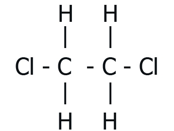

1,2 Дихлорэтан
1,2-дихло́рэта́н (преж. хлористый этилен) - хлорорганическое вещество; бесцветная жидкость со сладковатым запахом, имеющая формулу C1CH2-CH2C1. Является сильным ядом, оказывающим на человека канцерогенное действие.
Впервые синтезирован в 1795 году голландскими химиками, из-за чего получил свое название «жидкость голландских химиков». Широко применяется как полупродукт органического синтеза (наиболее часто - в производстве винилхлорида), а также в качестве растоврителя.